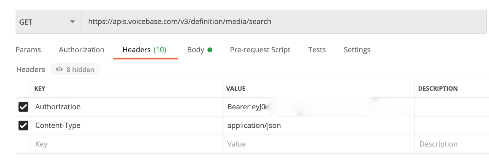

Indexing makes your upload searchable. If you’ve indexed the VoiceBase platform, you can then make a GET request filtering by specific fields. Similarly, if you’ve indexed in the Analytics Workbench, you can filter by making queries on those fields. Some fields are indexed by default, and others may be created by customers.
Indexing is required for both the VoiceBase platform and the Analytics Workbench of the VoiceBase app, because these employ separate databases.
VoiceBase has indexed the following fields by default:
'title','description','externalId','callDetails','extended'.
The ‘callDetails’ parent covers many commonly used fields, which you can view here along with their correct syntax.
The ‘extended’ field is designed to be used by customers to create their own custom fields. If you have an unusual field not covered in the default 'callDetails', you may create it under ‘extended’. We recommend checking the complete list of fields already indexed under 'callDetails' before creating custom fields.
curl https://apis.voicebase.com/v3/definition/media/search --header "Authorization: Bearer eyJ0e..." --header "Content-Type: application/json" --request PUT --data '{ "fields" : [ "extended.datasetID", "extended.score", "extended.uploadversion"] }'Confirm indexed fields:
curl -H 'Authorization: Bearer eyJ0e...' 'https://apis.voicebase.com/v3/definition/media/search' -XGET Alternately, confirm indexed fields with Postman:
ALTER TABLE media DEFINE metadata:datasetID varchar, metadata:score integer, metadata:uploadversion varcharNow, your custom indexed fields are viewable in the Schema Tab, along with the default indexed fields. (Schema icon is beside the ‘+’ sign, on the far right.)
During upload, include the following in your configuration, which sends the files to the Analytics Workbench:
"publish": {"enableAnalyticIndexing" : True}Include a metadata attachment:
{
"externalId": filename,
"extended": {
"uploadversion": 2,
"datasetID": "Company_X"
}Since you have indexed in both the VoiceBase platform and the Workbench, both of these are now searchable.
Include an “if” statement in your batch GET script:
if my_dict['media'][i]['metadata']['extended']['datasetID’] == ‘Company_X’:
You may create a query using any field in the Schema tab, which also appear as column headers. For example, to search for previously indexed metadata, use this syntax:
SELECT * FROM media WHERE metadata:datasetID = 'Company_X'A similar syntax is used for most of the fields. One exception is 'metrics', where the syntax requires quotation marks:
SELECT * FROM media WHERE metrics:"agent-average-streak" > 0